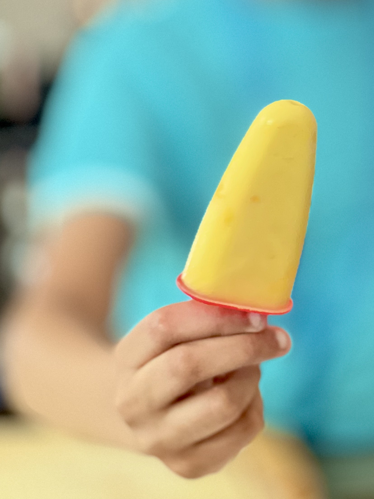

Mango Blast Recipe
Ingredients
- 1 Mango
- 2 tbsp Monkfruit Sweetener
- 3 spoons Yogurt
- ½ cup Milk
Instructions
- Cut the mango along the seed.
- Scoop out mango into blender.
- Put in the Monkfruit Sweetener.
- Pour in the Milk
- Put in the Yogurt
- Blend in blender and put aside.
- Cut all remaing fruit off of the seed and put in ziplock bag.
- Mash mango with hand until some chunks remain.
- Take popsicle mold and pour in a little bit of smoothie, then scoop in a little bit of the mashed mango. Alternate between the two until full.
- Lastly cover mold and freeze for 8-10 hours.